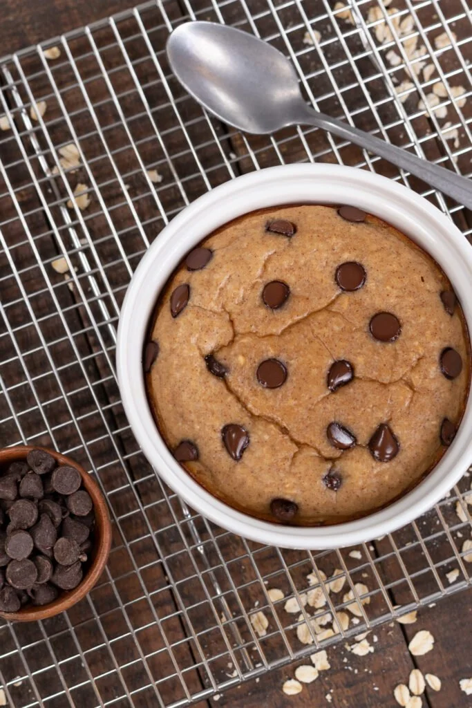

Easy High Protein Baked Oatmeal

This baked oatmeal recipe is guaranteed to step your protein oatmeal game up!
All you need to make it? A good blender or food processor.
It's time to make up for some lost time and level up your protein oatmeal!
This Easy High Protein Baked Oatmeal recipe is absolutely delicious, packed
with healthy fats, has complex carbs, and takes no time at all to make.
Ingredients
- ½ Cup Rolled Oats
- 1 Banana
- ½ Teaspoon Ground Cinnamon
- 1 Teaspoon Vanilla Extract
- 2 Tablespoons Nut Butter
- ½ Container Greek Yogurt - Your Choice Flavor
- 2 Ounces Milk Substitute - Unsweetened
- ¼ Teaspoon Salt
- ½ Teaspoon Baking Powder
- 1 Scoop Protein Powder - Your Choice Flavor
- Chocolate Chips - *Optional Sugar Free
Steps
- Blend or process all of your ingredients together until smooth
- Pour your mix into an oven safe dish or dishes (multiple servings)
- Optionally top with some Sugar Free Chocolate Chips or anything else you want
- Bake on 350F/176C for around 20-30 minutes
Return to Top
Return to Homepage